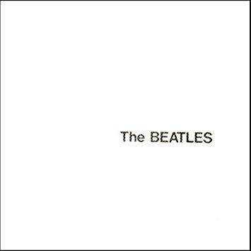
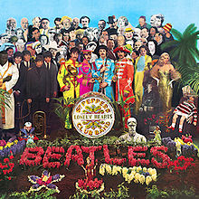

Albumai
Geriausi jų albumai bei šiek tiek apie juos

Geriausi jų albumai bei šiek tiek apie juos
ABBEY ROAD
Turbūt geriausiai žinomas bei dažniausiai imituojamas Bitlų albumo viršelis.
Tai jų vienuoliktas albumas išleistas rugsėjo 26 dieną, 1969 metais.
Tai roko albumas, kuris taip pat apjungia ir bliuzo, pop'o bei progresyvaus roko žanrus.
Pirma pusė:Come together
Something
Maxwell's Silver Hammer
Oh! Darling
Octopus's garden
I Want You (She's SO Heavy)
Antra pusė:Here Comes the Sun
Because
You Never Give Me Your Money
Sun King
Mean Mr. Mustard
Polythene Pam
She Came In Through the Bathroom Window
Golden Slumbers
Carry That Weight
The End
Her Majesty
Pirma pusė:
Antra pusė:
THE BEATLES("THE WHITE ALBUM")

"The Beatles" yra Jungtinėje Karalystėje išleistas
britų roko grupės The Beatles albumas. Išleistas 1968 m. lapkričio 22 d.
Pirma pusė:Back in the USSR
Dear Prudence
Glass Onion
Ob-La-Di, Ob-La-Da
Wild Honey Pie
The Continuing Story Of Bungalow Bill
While My Guitar Gently Weeps
Happiness Is a Warm Gun
Antra pusė:Martha My Dear
I'm So Tired
Blackbird
Piggies
Rocky Raccoon
Don't Pass Me By
Why Don't We Do It in the Road?
I Will
Julia
Pirma pusė:
Antra pusė:
SGT. PEPPER'S LONELY HEARTS CLUB BAND

Sgt. Pepper's Lonely Hearts Club Band
(Seržanto Pipiro Vienišų Širdžių Klubo Grupė) yra aštuntasis britų roko grupės
The Beatles albumas, išleistas 1967 m. birželio 1 d. Jungtinėje Karalystėje
ir sekančią dieną JAV. Įrašytas per 129 dienų periodą, prasidedantį nuo 1966 m.
gruodžio 6 d. Kartais kritikų vadinamas geriausiu The Beatles kūriniu
ir vienu iš įtakingiausių visų laikų albumų. 2003 metais žurnalas Rolling Stone
išrinko jį geriausiu visų laikų albumu (sąrašas 500 „Greatest Albums of All Time“).
Pirma pusė:Sgt. Pepper's Lonely Hearts Club Band
With a Little Help from My Friends
Lucy in the Sky with Diamonds
Getting Better
Fixing a Hole
She's Leaving Home
Being for the Benefit of Mr. Kite!
Antra pusė:Within You Without You
When I'm Sixty-Four
Lovely Rita
Good Morning Good Morning
Sgt. Pepper's Lonely Hearts Club Band (Reprise)
A Day in the Life
Pirma pusė:
Antra pusė: